Data Mining 阅读笔记
第二章 数据预处理
2.1 简介
收集到的数据很可能是非结构化的，需要从其中提取特征，因此需要数据预处理。
数据预处理的几个步骤：
- 特征提取和可移植性
- 数据有多个来源，需要集成到单个数据库；有些算法只能使用特定的数据类型，而数据可能包含不同类型的数据，因此需要数据类型的可移植性
- 数据清洗
- 删除/插补条目
- 数据消减、选择和转换
- 数据量减少：通过采样/降维
- 特征选择：和具体问题高度相关
2.2 特征提取和可移植性
收集到的数据是原始、非结构化的（raw, unstructed)，需要转换成统一的形式
2.2.1 特征提取
在某些情况下，特征提取与数据类型可移植性的概念密切相关，其中一种类型的低级特征可能转换为另一种类型的高级特征。特征提取的性质取决于数据应用的领域：
- **传感器数据：**传感器数据通常以大量的低电平信号（low-level signals）收集。有时使用小波变换或傅里叶变换将低电平信号转换为更高级的特征。
- 图像数据：
- 原始形式：图像数据被表示为像素
- 稍高级别：可以使用颜色直方图来表示图像不同部分的特征（直方图只能描述颜色的分布，不能描述数据几何上的信息）
- 视觉词袋：类比NLP中的词袋模型。用来表示图像的含义。
- 图像处理中的一个挑战是数据量大
- Web日志：Web日志通常以预先指定的格式表示为文本字符串。由于这些日志中的字段被明确指定和分隔，因此将Web访问日志转换为分类和数字属性的多维表示相对比较容易。
- 网络流量：网络数据包的特征用于分析入侵等。可以从这些数据包中提取各种特征，例如传输的字节数、使用的网络协议等。
- 文档数据：文档数据通常是原始和非结构化的。一种方法是删除停用词，词干提取（stemming），并使用词袋模型表示。也可以使用实体抽取。
命名实体识别是信息提取的重要子任务。可以用来理解句子和复杂事件的结构。也可以用于填充更传统的关系元素数据库或者更容易分析的原子实体序列。
2.2.2 数据类型可移植性
数据类型的混合也限制了分析人员使用现成的工具进行处理的能力。在某些情况下移植数据类型确实会丢失表达能力和准确性。理想情况下，最好根据特定的数据类型组合来定制算法以优化结果，但这是耗时的。
数字数据类型是数据挖掘算法中最简单和研究最广泛的数据类型，所以研究如何将不同数据类型转换为数字数据类型尤其有用。
2.2.2.1 数字到分类数据：离散化
离散化过程将数字属性的范围划分为φ个范围。然后，根据原始属性所在的范围，假定该属性包含从1到φ的φ个不同分类标注值。例如，考虑年龄属性。人们可以创建范围[0,10]，[11,20]，[21,30]等等。范围[11,20]中任何记录的符号值为“2”，范围[21,30]中记录的符号值为“3”。由于这些是符号值，因此在值“2”和“3”之间不会进行排序。此外，一个范围内的变化在离散化之后是不可区分的。因此，离散化过程的确会失去一些挖掘过程的信息。
离散化的一个挑战是数据可能在不同的时间间隔内不均匀分布。例如工资，使用相同大小的范围可能对区分不同数据段不是很有帮助。
离散化过程可以根据应用特定目标以各种方式执行：
2.2.2.4 从时序到离散序列
SAX：表示的独特之处在于它允许降维，它还允许在符号表示上定义距离度量
https://zhuanlan.zhihu.com/p/340483923
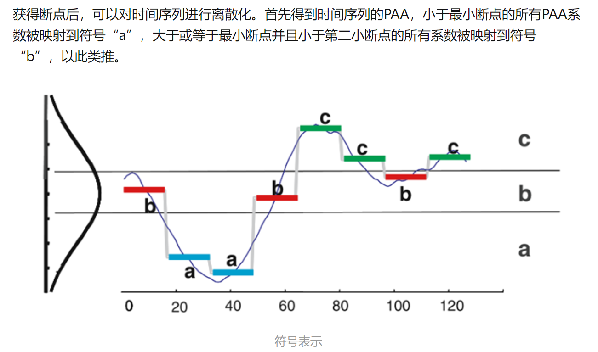2.4.3.1 主成分分析
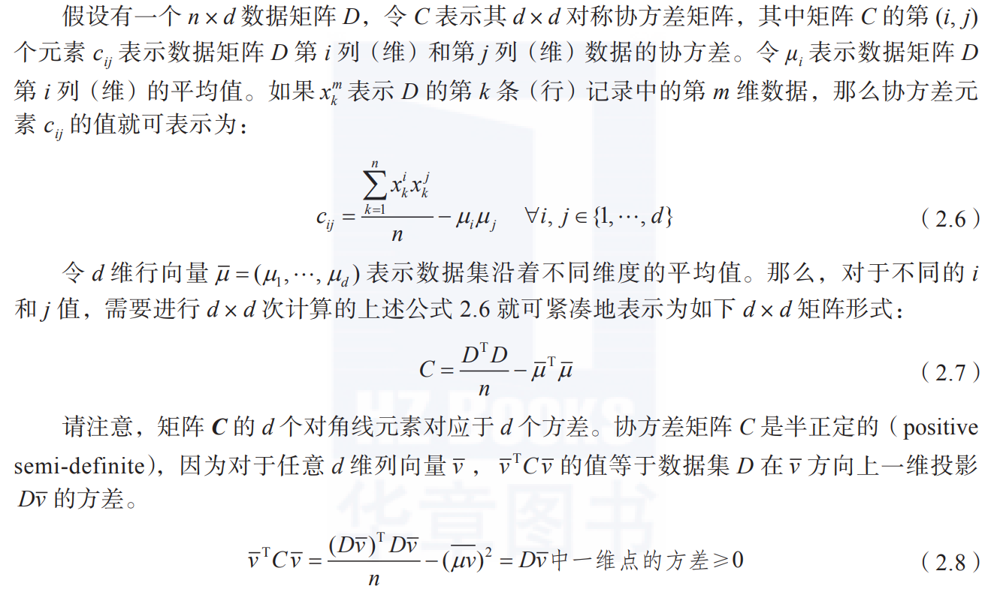本来的C矩阵是样本d个维度间的协方差，现在投影后就一个维度，变方差而不是协方差了
2.4.3.2 奇异值分解
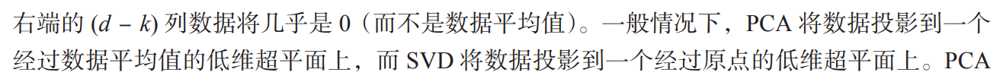PCA 捕获尽可能多的数据方差（或者到数据中心点的欧几里得距离平方），而SVD捕获尽可能多的到原点的欧几里得距离平方和
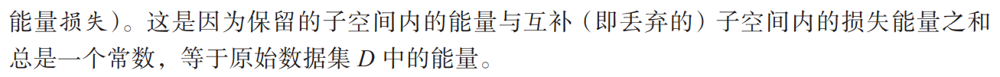可用特征值之和（即奇异值平方后的加和）=矩阵对角线元素之和（方差之和）解释
2.4.3.3 潜在语义分析
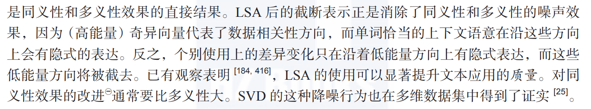不懂
2.4.4 用类型转换降维
本节将研究两种这样的转换方法：
1、时间序列到多维：使用了许多方法，例如离散傅里叶变换和离散小波变换。 虽然这些方法也可以看作由上下文属性的各种时间戳定义的轴系统的旋转，但数据在旋转后不再依赖于相关性。（不具有相关性，可能指变换到三角正交基上了？） 因此，可以以类似于多维数据的方式处理结果数据集。
2.4.4.1 哈尔(Haar)小波变换
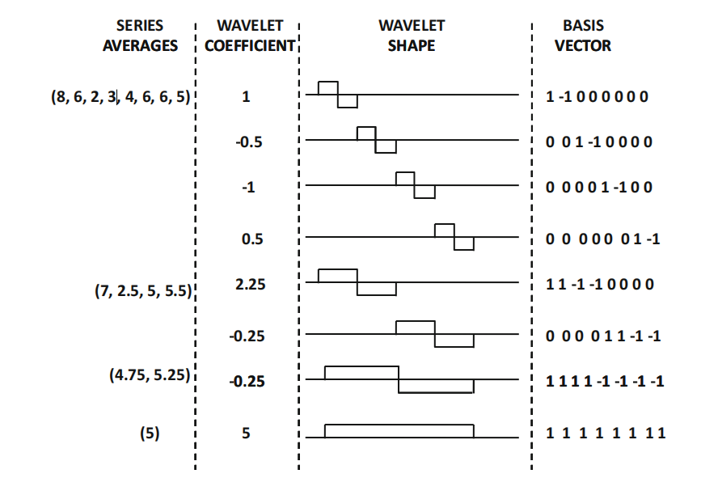可以看成8个点，系数=左边一半的平均值减右边一半的平均值再除以2，第一个相当于（8-6）/2=1，也相当于那个WAVELET SHAPE和SERIES AVERAGES做内积
这些基两两正交
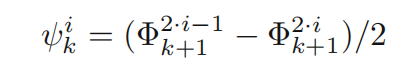指的是第几段
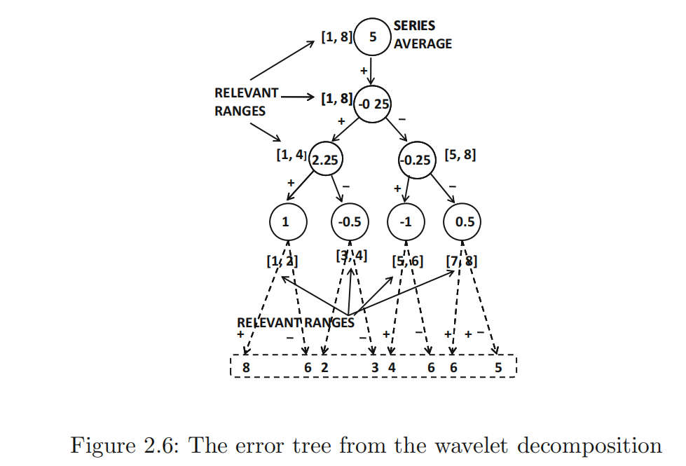原始序列中的每个值都可以表示为log2(8)=3小波系数的总和，前面加上正号或负号。
Energy的定义（在奇异值/PCA分解中都有涉及）：energy, which is the sum of squared Euclidean distances from the origin
可以看第46页
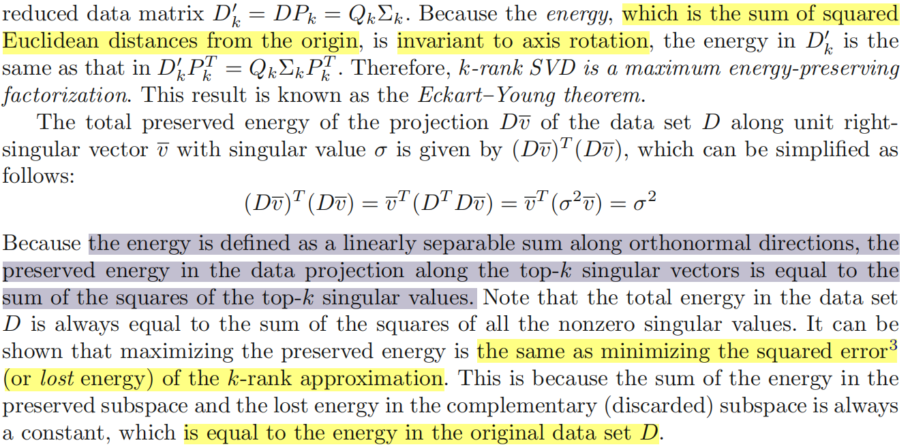本小节关于energy的：
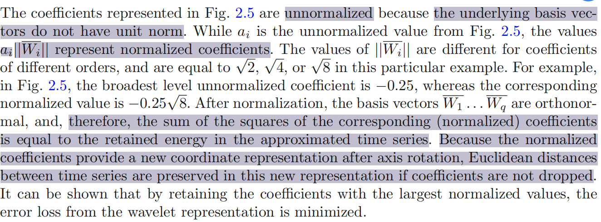2.4.4.3 谱转换和图嵌入
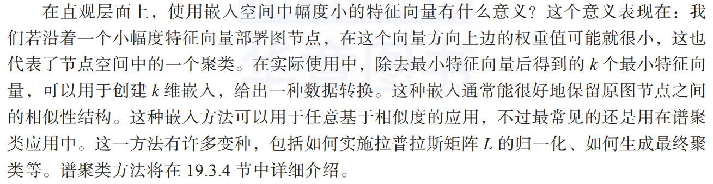PCA是投影到方差大的轴上，图嵌入是使之间有边的两个节点尽量地靠在一起，直观来说就是让方差变小，即聚类
放回/不放回
3.2.1.2 高维数据的影响
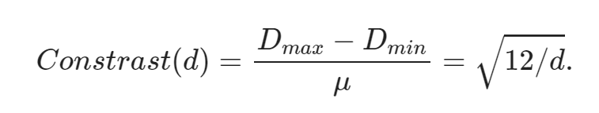反映从原点出发的最大距离和最小距离之间差异的程度
3.2.1.3 局部不相关特征的影响
The additive effffects of the natural variations in the many attribute values may be quite signifificant.没理解
对于一个包含糖尿病患者的集合，特定的某些属性对于距离的计算更加重要，例如血糖水平。另一方面，对于包含癫痫病患者的集合，另一组特征会更加重要。
这里需要理解的关键点是，和距离计算相关的几个特定特征可能有时会对于被比较的特定对象对非常敏感。在预处理过程中全局地筛选特征子集不能解决这个问题，因为特征是否相关是由被考虑的对象对局部地决定的。全局来说，所有特征可能都是相关的。 （没理解）
当许多特征不相关时，不相关特征的加性噪声效果有时可能会表现为距离值的集中。在任意情况下，这样的不相关的特征总是会在距离计算中引入误差。因为高维数据集经常包含各种特征，许多是不相关的，像L2−范数这样使用平方和的方式计算距离，其加性效果会非常具有破坏性。
3.2.1.4 不同 范数的影响
无穷范数：表示两个对象最不相似的那个维度。研究相似度的问题，如果两个对象在999个属性上有相似的值，那么这两个对象应该被定义为非常相似。但是，单独的一个不相关的属性，如果两个对象在这个属性上相差很多，那么在无穷范数L∞的度量下，这两个对象的距离会被拉的很远。换句话说，局部的相似的属性被无穷范数L∞忽视了。总体上，对于较大的pp值，Lp−范数都是这样：不相关的属性被强调了。
3.2.1.5 基于匹配的相似度计算
由于不相关特征的噪声变化，一对语义相似的对象可能包含不相似的特征值（在沿着该维度的一个标准偏差的水平）。（比如有一个服从于高斯分布的噪声？）
欧几里德度量（通常是Lp−范数）通过使用属性值差异的平方和来达到完全相反的效果。结果，来自不相关属性的“噪声”分量主宰了计算并掩盖了大量相关属性的相似效应。无穷范数是一个极端的例子
维样本，每个维度 ，样本被均分成 份
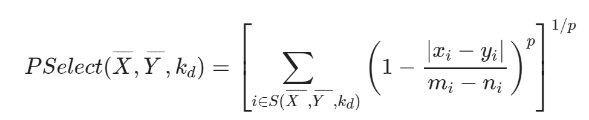这种方法忽略了遥远维度上的不相似程度，因为它常常受噪声支配。
关于d的kd的选择确保了对于低维应用，它通过使用大部分维度而与Lp−范数有一些相似之处;而对于高维应用，它通过在匹配属性上使用相似性来表现类似于类似于文本域的相似性函数。距离函数也被证明对原型最近邻分类应用更有效。（低维的话， 设小一点，极端一点，设为样本数，那么肯定在同一个桶中，那么一对数据的每个维度都会被计算相似度，类似于 范数；高维的话，有些维度噪声大， 设大一点，那么只要在某个维度上差异比较大，就不会在一个桶中，这个就不会被计算相似度）
3.2.1.6 数据分布的影响
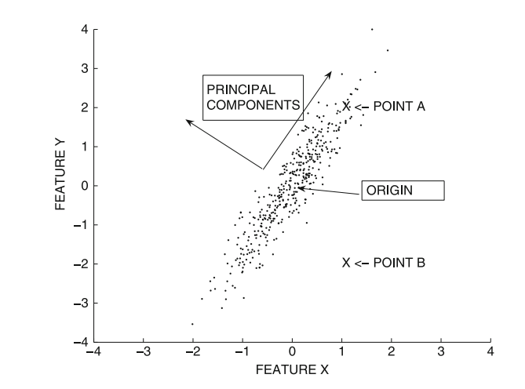图中A,B到O是等距的，但OA轴方差大，OB轴方差小，从统计上来说OA的距离应该小于OB
马氏距离：只需要将变量按照主成分进行旋转，让维度间相互独立，然后进行标准化，让维度同分布就OK了
https://zhuanlan.zhihu.com/p/46626607
3.2.1.7 非线性分布：ISOMAP
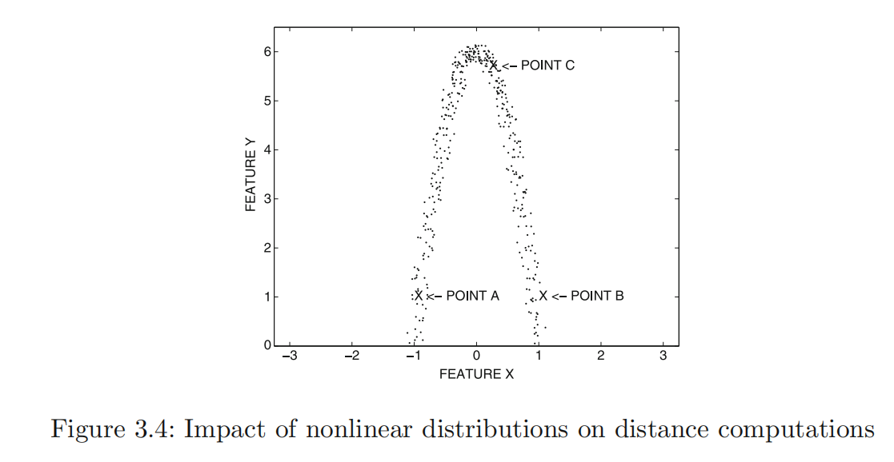从欧式距离来说AB更接近，但从全局的数据分布来说不是
直观的基本原理是，只有短暂的点到点跳转才能准确测量该点生成过程中的微小变化。因此，点到点跳跃的总和反映了比点之间的直线距离更准确地从一点到另一（远）点的总变化（距离）。这种距离被称为测地距离。
隐含的假设是，非线性分布是符合局部欧几里得的，但总体来说是非欧几里得的
embedding还没看
先用ISOMAP，再用MDS低维嵌入？
通常，高维数据沿着非线性低维形状排列，这也称为流形。这些流形可以被“扁平化”成为一种新的表示形式，可以有效地使用公制距离。
3.2.1.8 局部数据分布的影响
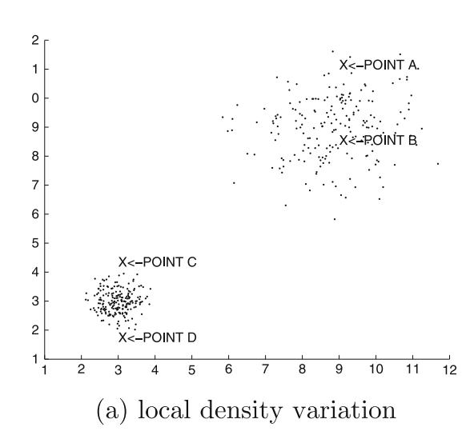CD和AB分别的绝对距离一样，但考虑到局部的数据分布，CD的距离应该大于AB
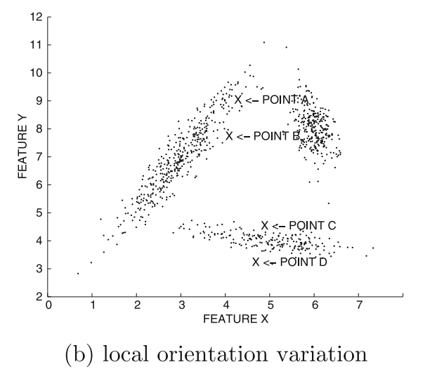所在轴的方差不同，实际上CD间的距离应该比AB间的距离大（可用马氏距离）
Shared Nearest-Neighbor Similarity（针对的是图a的问题，局部数据分布不同）：这个度量是局部敏感的，因为它取决于公共邻居的数量，而不取决于距离的绝对值。
Shared nearest-neighbor methods can be used to defifine a similarity graph：两个点如果有至少一个共享邻居的话，它们之间就连一条边。基于相似图的方法几乎总是局部敏感的，因为它们局限于k−最近邻分布。
Generic Methods：使用各种聚类方法将数据划分为局部区域。在对中的每个对象属于不同区域的情况下，可以使用全局分布，或者可以使用两个局部区域来计算平均值。如果是同一个区域，用局部的马氏距离。另一个问题是算法的第一步（分区过程）本身需要一个用于聚类的距离的概念。
3.2.1.9 计算考虑
For example, methods such as ISOMAP are computationally expensive and hard to implement for very large data sets because these methods scale with at least the square of the data size. 例如，像ISOMAP这样的方法计算起来很复杂，而且对于非常大的数据集很难实现，因为这些方法至少按照数据大小的平方进行缩放。 为什么？
新样本不好映射到低维空间（西瓜书）
3.2.2 分类数据
Distance functions are naturally computed as functions of value difffferences along dimensions in numeric data, which is ordered. 这个有序指的是空间上的顺序？
分类数据：二值化
对于分类数据的情况，使用相似性函数而不是距离函数更常见，因为离散值可以更自然地匹配。
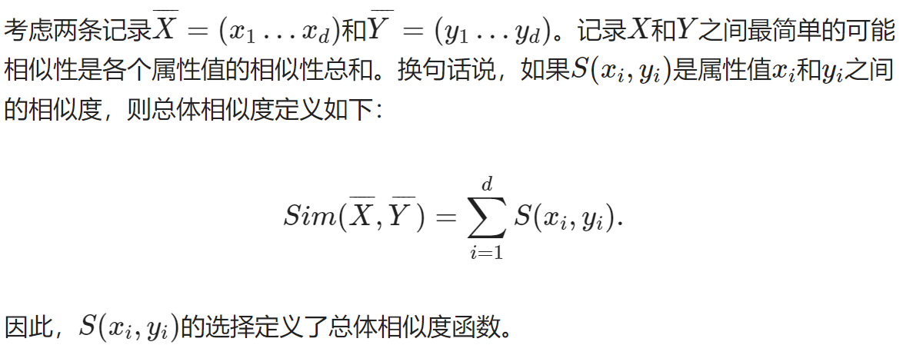最简单的选择是当xi=yi时将S(xi,yi)设置为1，否则设置0。这也被称为重叠(overlap)(overlap)度量。这一措施的主要缺点是它没有考虑不同属性之间的相对频率。
这一措施的主要缺点是它没有考虑不同属性之间的相对频率。
例如，考虑一个分类属性，其中99％的记录属性值为“正常”，其余记录为“癌症”或“糖尿病”。显然，如果两个记录对这个变量有一个“正常”的值，那么这并没有提供关于相似性的统计意义上的重要信息，因为大多数的对都可能只是碰巧显示了这个模式。但是，如果这两个记录具有与此相匹配的“癌症”或“糖尿病”值，那么它提供了相似性的重要统计证据。这个论点与之前关于全局数据分布重要性的论点类似。异常的异同在统计上比那些常见的更重要。
在分类数据的情况下，数据集的总体统计特性应该用于计算相似性。这类似于使用马氏距离如何使用全局统计数据更准确地计算相似性。这个想法是，对一个分类属性的异常值的匹配应该比经常出现的值的权重更大。
类似于文本中的IDF（逆文档频率），分类数据用逆出现频率（inverse occurrence frequency）来度量
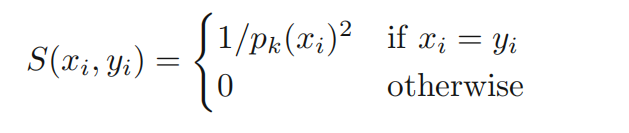变体：Goodall measure
a higher similarity value is assigned to a match when the value is infrequent
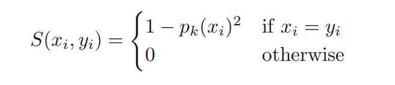3.2.3 混合定量和分类数据
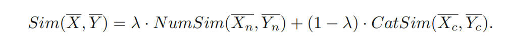缺少邻域知识的前提下（不知道哪一种数据更重要）， 可以取全部属性中数值型属性的占比
此外，数值数据中的接近度通常使用距离函数而不是相似度函数来计算。但是，距离值也可以转换为相似度值。对于dist的距离值，常用的方法是使用产生相似度值为1/(1+dist)的核映射（不懂）
normalization：
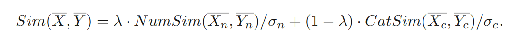3.3 文本相似性度量
只用 范数来度量文本之间的距离，会受文本长度的影响
可以用余弦相似度，计算两个文档之间的角度
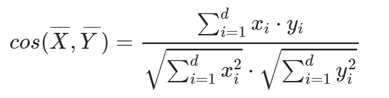上述措施仅使用属性之间的原始频率。可用全局统计量改进。例如，如果两个文档匹配一个不常见的单词，则它比两个文档匹配一个常见单词的情况更具有相似性。
方法一：逆文档频率：inverse document frequency
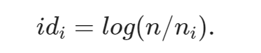随着第 个词在文档中出现频率增加而减小
方法二：在相似性计算之前，可以对频率应用一个如平方根或对数的衰减函数f(⋅)。确保单个词的过度存在不会影响相似性度量。
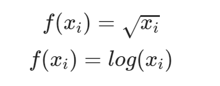因此，可以如下定义第i个词的归一化频率h(xi):
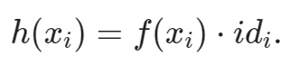 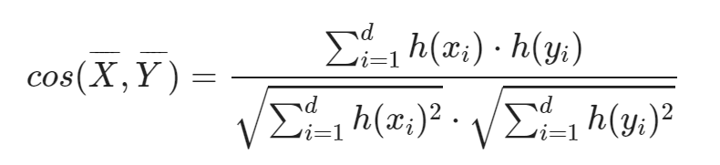3.3.1 二进制和集合数据
Jaccard 系数：稀疏二进制数据集。它可以被认为是文本数据的一个特殊情况，其中词频是0或1。
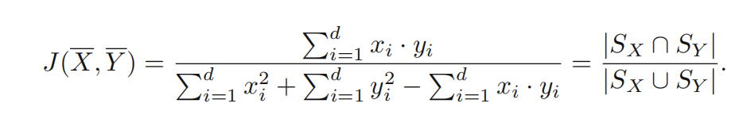非对称，比起0值更让注重1值
M11表示A和B对应位都是1的属性的数量
M10表示A中为1，B中对应位为0的总数量
M01表示A中为0，B中对应位为1的总数量
M00表示对应位都为0的总数量
 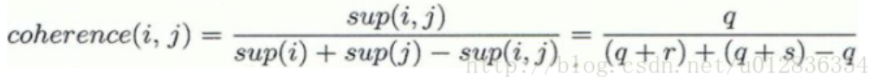
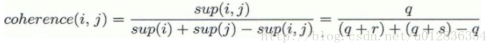
这个式子和 第一个等号后的式子一样
3.4 时间相似性度量
离散序列数据并不总是具有时序性的，因为上下文属性可能表示位置
- Temporal (contextual) attribute translation: 没看懂
3.4.1.2 -范数
在p=2的特殊情况下，如果在表示中保留了大部分较大的小波系数，则可以用小波表示获得精确的距离计算。（不懂）
3.4.1.4 基于窗口的方法
对于长时间序列，全局匹配变得越来越不可能。唯一合理的选择是使用窗口来测量分段的相似度。（长时间序列点对点匹配太复杂，所以换成窗口对窗口匹配？）
3.4.2 离散序列相似性度量
离散序列数据的应用领域通常是一对一映射不存在的。
3.4.2.2 最长的公共子序列
长度较长的子序列表示字符串之间的匹配程度更高。
与编辑距离不同，最长的公共子序列（LCSS）是一个相似性函数，因为较高的值表示较大的相似性。
3.5 图的相似性度量
3.5.1 单个图中两个节点之间的相似性
通常，距离函数与成本一起工作，而相似函数与权重一起工作。
3.5.1.1 基于结构距离的测量
基于结构距离的测量不会显著增加一对节点之间路径的多样性，因为它们只关注原始结构距离。（没有考虑一对节点之间是否有多条路径（路径数越多越相关））
3.5.1.2 随机行走相似度
此外，在任何给定的节点处，允许以被称为重新启动概率的概率“跳回”到源节点s。这将导致严重偏向源节点的概率分布。与s更类似的节点访问的概率较高。这种方法将很好地适应图3.10所示的情况，因为将更频繁地访问B。
PageRank/SimRank没看
3.5.2 两个图之间的相似性
图同构问题：NP-hard
3.7 总结
The determination of time-series and discrete-sequence similarity measures is closely related because the latter can be considered the categorical version of the former.
不懂
Similarity and Distance
在数据挖掘的几大问题，比如聚类、异常检测、分类中，都涉及到数据对象之间相似度或者距离的计算。书中用Sim dist这两个函数进行表示
相似度函数下，值越大意味着相似性越强；距离函数下，值越小意味着相似性越强。这是显而易见的
在某些领域，比如空间数据中，我们用距离函数来度量比较自然，在其他的比如文本数据中，我们用相似度函数来度量会比较自然
这章分成5个模块，前四个模块介绍了不同数据类型的距离度量或者相似性度量方式，第五个模块介绍了有监督的相似性度量。
首先讲的是如何设计多维数据的距离函数，本节中讨论的是多维数据中的定量型数据、类别型数据和混合型数据
对于定量型数据，最常见的度量它的距离函数是 范数，p=1时是曼哈顿距离，p=2时是欧几里得距离
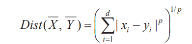虽然 范数的可解释性很好，特别是 范数和 范数，但使用的时候还应该考虑数据的维度、分布、特征相关性等等因素。然后接下来作者就讲了9个使用 范数时候需要考虑的因素。
1、我们可以用邻域知识对特征进行加权，更重要的特征赋予更大的权重，也就是利用广义的 距离，也叫闵可夫斯基距离。
2、第二个影响因素是高维度，也就是维度诅咒，意思是距离函数可能会随着维度的增加而无法准确地反映数据点之间的相对距离，具体来说比如在聚类算法中，它就会把本来无关的数据点分到一组
作者在这里举了一个例子，考虑一个在非负象限的d维单位立方体，一个顶点在原点，然后计算从它的原点出发到立方体内部随机一个点的曼哈顿距离。比如说这个点设为 ，那么它到原点的曼哈顿距离就是它所有维度坐标值之和，并且这些坐标都服从01均匀分布。用 表示01均匀分布的随机变量，那个曼哈顿距离可以表示为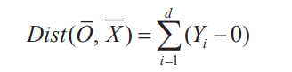。这个距离值是一个均值为 ，方差 为 的随机变量。然后对于一个很大的 ，由大数定律可知这个随机变量会大概率地落入 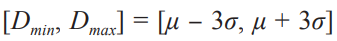中。这里用的应该是切比雪夫不等式，
也就是说所有数据中，至少有8/9（或88.9%）的数据位于平均数3个标准差范围内。
所以大部分点的距离都在 和 之间变化。
然后作者定义了一个关于维度 的变化率，它是距离变化量和距离期望的比值。它衡量了到原点的最小和最大距离之间具体有多大差距。可以看到随着维度 增加，对比度降低，说明不同数据点之间越来越难区分（区分度变差），这对数据挖掘算法肯定是不利的
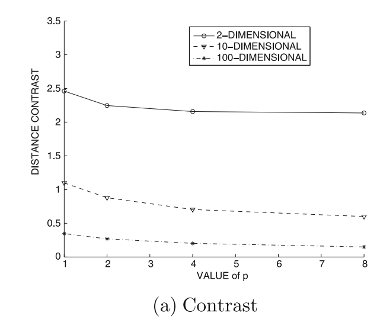3、第三点是局部不相关特征的影响。是指在高维的数据中，对于某一个特定问题，某些特征是与问题无关的，这些无关特征的叠加很有可能产生很大的噪声，比如欧氏距离中有平方和的叠加，那些无关特征维度产生的噪声可能会使计算出来的距离值很大
4、第四点是使用不同的 范数会对距离度量产生不同的影响。考虑极端情况，就是用无穷范数来度量，它只会对两个对象间最不相似的维度进行比较。但如果一个1000维的数据，就算两个数据在999维上都很相似，产生决定性影响的也只有那个不相似的维度，也就是过分关注无关属性。而且这种情况对于较大的p值更为明显。
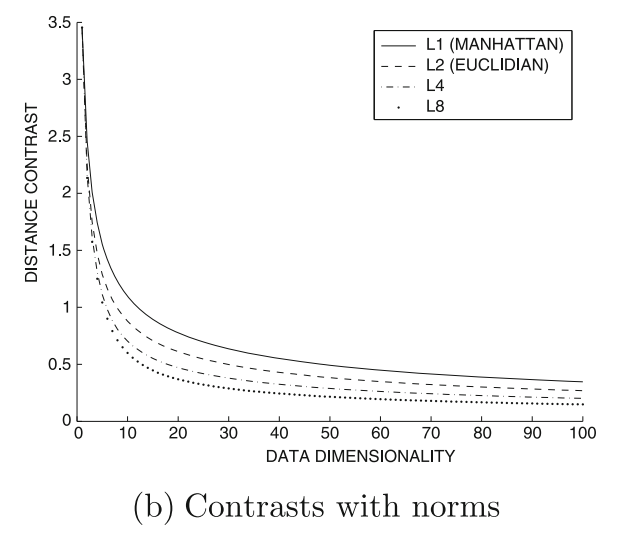 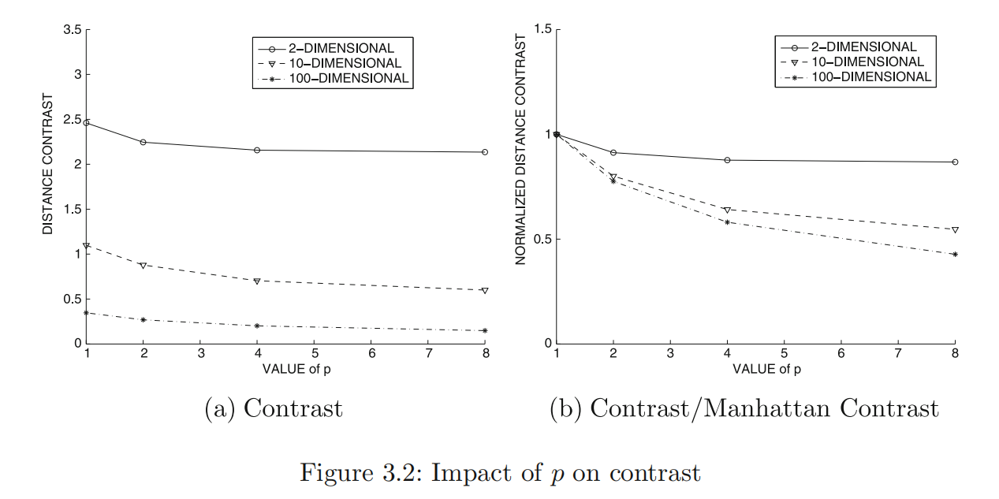这两张图可以说明维度越大，p值越大，距离对比度就越小，而且维度越大，距离对比度就下降得越快
3.2 b这张图的纵坐标是不同维度下各个范数的对比度与曼哈顿距离对比度的比值
但是对于二维数据，对比度几乎没怎么下降，说明p的取值在低维数据中不那么重要
然后作者把这个归一化后的p值叫做分数度量。经验上来说，维度越大，p值应该越低
（为啥要指导p的选择？）
5、第五点叫做基于匹配的相似度计算。之前提到距离度量中，无关属性的噪声可能占支配地位，掩盖了其他相似的属性，所以我们现在不计算距离了，而是去计算相似度，更加关注相关的属性。
一种方法叫做邻近阈值。它把每个维度离散成 个等高的桶，每个桶里面的数据量一样。
比如对于两个d维数据 ，如果它们在第 i 维上的值在同一个桶中，就说X,Y两个数据在第i维上是邻近的。所有邻近的维度用一个集合表示，叫邻近集。我们可以计算X,Y两者的相似度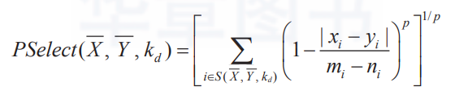，其中 和 是它们第i个维度所在桶的上下界。
从这个式子可以看出，它忽略了那些不相似的维度，对于那些相似的维度，用0到1之间的一个值表示某个维度上的相似程度。这个式子的值越大，表示两条数据越相似。
然后 这个值是根据维度 d设置的，经验上来说维度越高， 设得越大，会使得对每个维度都筛选的更严格，可以筛掉很多无关的维度；低维的情况下，数据本来维度就少， 就设得小一些
作者说这类函数在最近邻分类中比较有效
6、数据分布也会影响 范数的距离度量。 范数计算两点间距离时，并没有考虑全局统计量，但实际上两点间的距离也依赖于其他数据的分布情况。
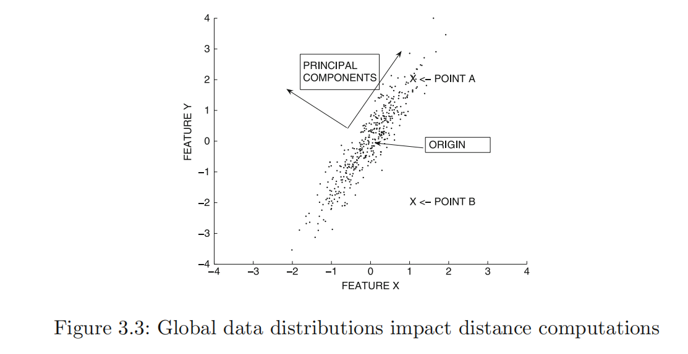比如在这张图中，A和B到原点O的距离是相等的，但实际上OA方向的方差较大，统计上来说会有更多的点落在离O点较远的地方，而OB方向方差较小，离O点近的可能性更大。因此OA的距离应该小于OB的距离
为了消除数据分布对距离度量的影响，可以用马氏距离。马氏距离只需要将变量按照主成分进行旋转，让维度间相互独立，然后进行标准化，就是除以那个维度的标准差
7、第七个它介绍了一下ISOMAP，一个非线性降维的方法。它针对的是数据是非线性分布的情况。比如这张图中如果只考虑欧氏距离，AC离得是最近的，但考虑数据的具体分布，实际上AC是离得最远的。具体的算法在上学期的智能系统课里面已经讲过。主要就是计算高维的流形中点与点之间的测地线距离，得到距离矩阵，然后就可以用MDS算法将数据嵌入到低维
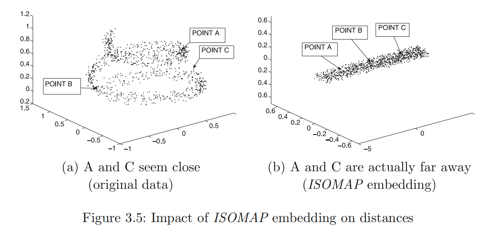8、第八点是设计距离函数的时候还要考虑局部数据的分布。前面只考虑了全局的数据分布，但是在不同的区域，数据的分布也可能不同，具体反映在两点，一个是不同区域数据的密度不同，另一个是簇的形状可能不同。
左边这张图举的例子是数据密度不同，虽然CD，AB距离看上去一样，但考虑到局部的密度，CD间的距离应该更大。LOF（局部异常因子）就是一种基于密度的局部离群点检测算法，它主要的思想就是，如果一个点的密度越小于其周围点的密度，就越可能是离群点；如果一个点的密度越大于其周围点的密度，就越可能是正常点
针对这种局部密度不同的情况，还可以用共享最近邻相似度的方法来度量。在预处理阶段就计算每个数据点的k近邻，将共享最近邻相似度定义为两个数据之间的共同邻居数，这种度量就不用再依赖绝对距离了。在这个基础上可以定义相似图，其中至少有一个共享邻居的两个数据点之间用一条边相连。
右边这张图举得例子是各个簇的形状不同，AB方向的方差明显大于CD方向的方差，不同簇有不同的协方差矩阵，可以先聚类，然后用这些统计量分别计算每个簇的局部的马氏距离。可以得到CD间的实际距离应该更大
9、设计距离函数时还要考虑计算复杂度
预处理和距离计算的权衡
没讲什么，就举了一个ISOMAP的例子（Floyd算法n的三次方），它在对数据进行预处理时开销很大，但是预处理只需做一次，将数据的表示形式转换后距离的计算就可以加快
接下来讲的是离散的类别型数据如何计算距离。一种方法是用二值化的方法把类别型数据转化成数值型数据，并且一般是稀疏的。而且对于类别型数据，使用相似度来度量比使用距离来度量更加常见
X，Y是两条数据，它们的相似度可以定义为每个维度相似度之和。对每个维度来说，最简单的办法是直接把xi，yi相等时设为1，否则为0，也叫做重叠度量。缺点是没有考虑不同属性的相对频率。比如有一个类别型属性，有三个类别，正常、癌症、糖尿病，99%的概率都是正常的，那么如果这两条数据的这个类别都属于正常，其实并没有在相似性度量上提供太多的信息；但如果这两个都属于癌症，或者糖尿病，那么这种非典型的数据对相似性度量来说应该是比较重要的。可以与之前的全局数据分布进行类比，之前我们用全局统计量先归一化再计算马氏距离，这里我们同样可以利用全局统计量，赋予不常见的类别更大的匹配权重，比如两个都属于癌症的相似度会大于两个都属于正常的相似度。
具体可以用逆出现频率（inverse occurrence frequency）来度量
变体：Goodall measure
第三种情况是定量型数据和类别型数据的混合。比如这样两条数据，其中 是定量型数据，是类别型数据，它们整体的相似度可以这样定义
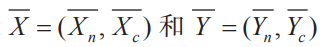用来表示数值型数据和类别型数据的相对重要程度，如果缺少相应的邻域知识， 可以取数值型属性在全部属性中的占比。
另外，数值数据通常用距离函数而不是相似度来度量。但是我们可以把距离转换为相似度值，比如可以用这样一个映射1/(1+dist)。
接下来还可以再做一下归一化，因为衡量这两类属性的相似性的尺度可能不同
3.3 文本相似性度量
如果用词袋模型表示文本，文本可以看成是定量型的多维数据，每一维是对应某个词出现的频率。这种表示方法下的数据是稀疏的，并且距离度量受文本长度的影响。（？）
介绍了两种衡量文本间相似度的方法
1、一种解决方法是用余弦度量。它计算的是文本转化成向量后两者间的角度。这里的d指的是词典大小是d
这种方法用的是单词原始的出现频率，和之前计算类别型数据的相似度一样，我们可以引入全局统计量。比如，两个文本同时出现了一个不常见的单词，比它们同时出现一个常见单词的相似度更高。
因此一种改进方法是用逆文档频率：inverse document frequency
是文本的数量，是含有第 个词的文本数量，单词出现越频繁，IDF越小
另一种改进的方法是在计算相似性之前，对词频施加一个平方根或对数的衰减函数f(⋅)。确保频繁出现的词不会影响相似性度量。
同时使用两种方法，就可以将第 个词的频率这样定义 ：
然后再使用余弦度量
2、另外一种文本度量方式是 Jaccard系数，它主要用在稀疏的二元数据集，但也可以看作是文本数据的一个特殊情况，其中词频是0或1。这里主要讲一下它应用在二元数据中的意义。二元多维数据可以用来表示集合，0表示不在集合中，1表示在集合中。它的定义是交集和并集的比值，表示两个集合的相似度。
也是非对称的一种度量方式，因为它只关心双方共同含有的元素，忽略了那些都没有的元素
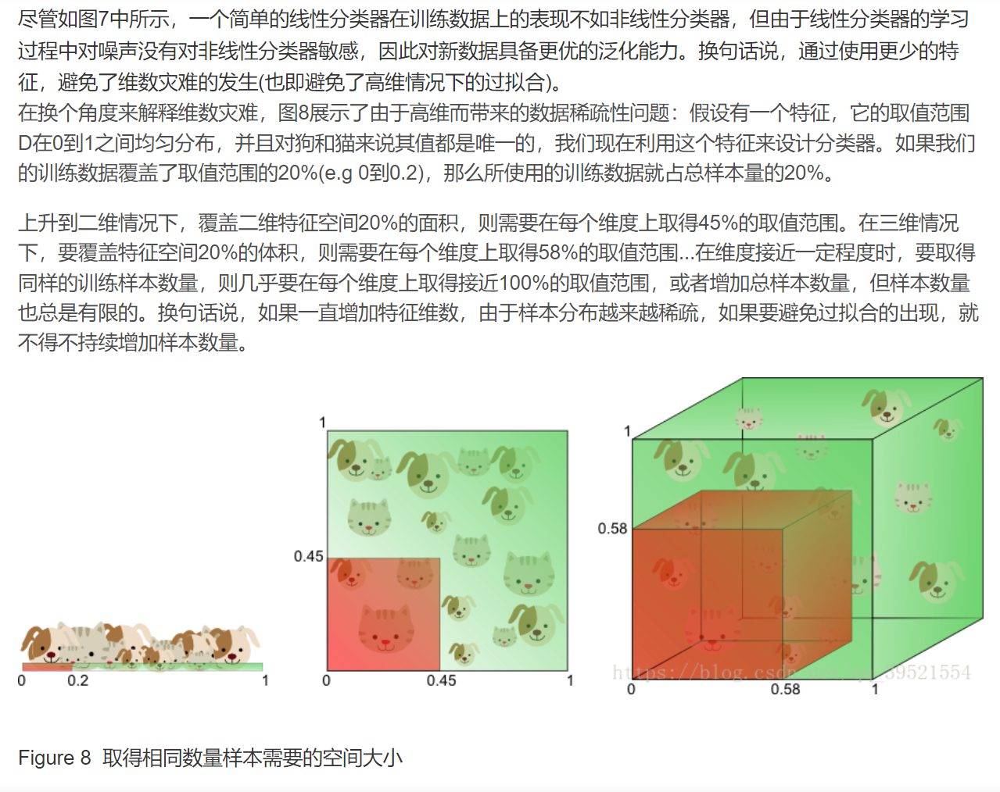- CURE聚类：基于质心（代表：K-means）和基于代表对象方法（代表：K-Medoids）之间的中间策略
https://zhuanlan.zhihu.com/p/55105352
https://wenku.baidu.com/view/ba21eb315a8102d276a22f4c.html 具体实现
c个代表点体现了簇的物理几何形状；向中心收缩可以降低异常点的影响。两个簇组合后的新簇，则重新选择c个点作为簇的代表。
https://wenku.baidu.com/view/2c268ec6c381e53a580216fc700abb68a882ad02.html?fr=income6-doc-search挺详细 birch都有
7.2 类别型数据的聚类
如果是数值型的数据，我们可以在上面进行距离计算、确定代表点等等，
类别型数据二元化，像购物篮，某个布尔属性代表是否有这个商品
https://wenku.baidu.com/view/5f4b9022482fb4daa58d4b17.html?fr=income1-wk_app_search_ctr-search
https://www.inf.ed.ac.uk/teaching/courses/dme/studpres/Rock.pdf
https://blog.csdn.net/weixin_40677836/article/details/120872389
- ROCK的链接指的是两个对象间共有的近邻数
- 鲁棒指的是：
- 先介绍有关概念
- 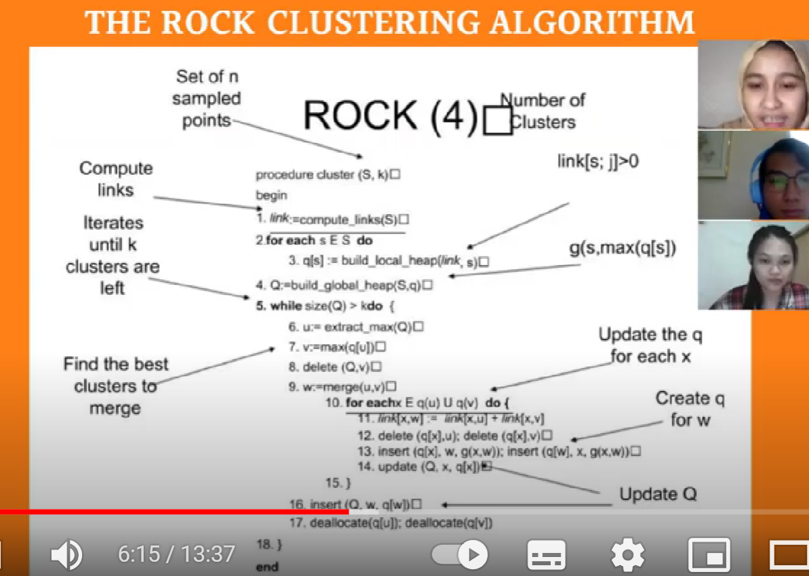
- 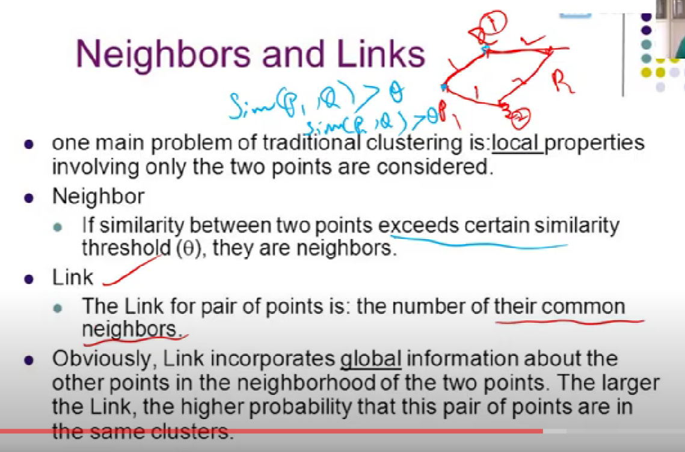
- 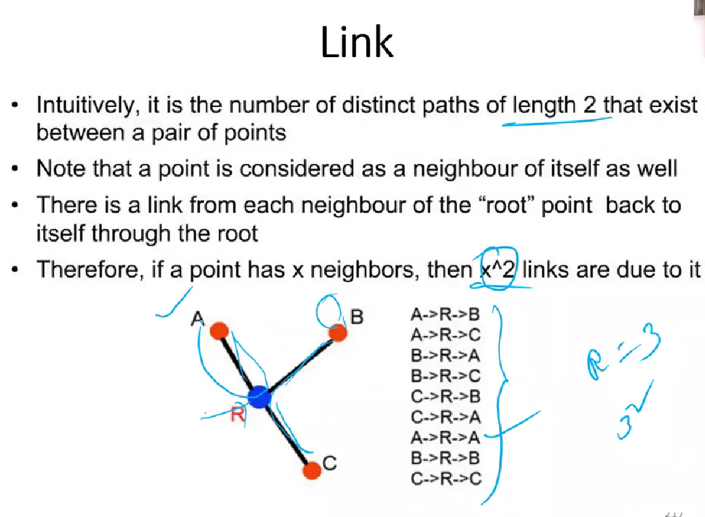
- 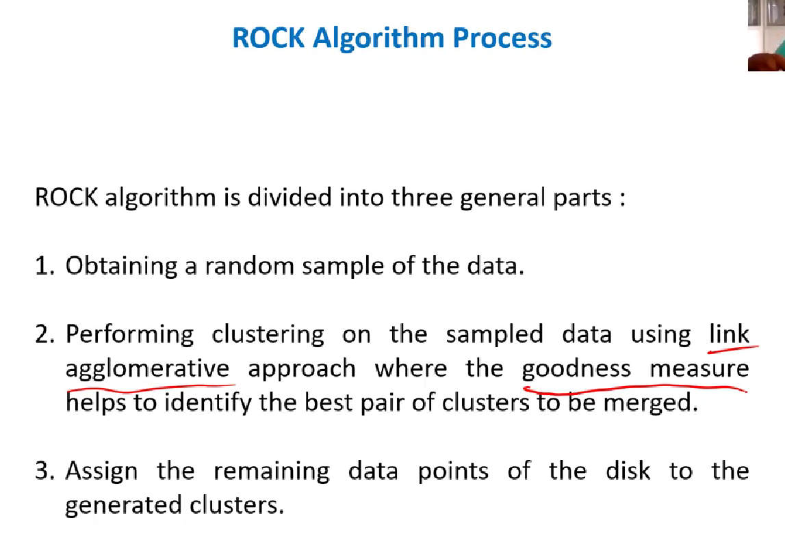
- 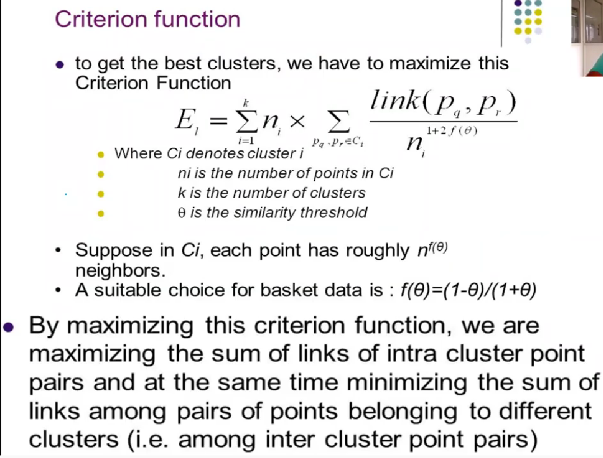
example：
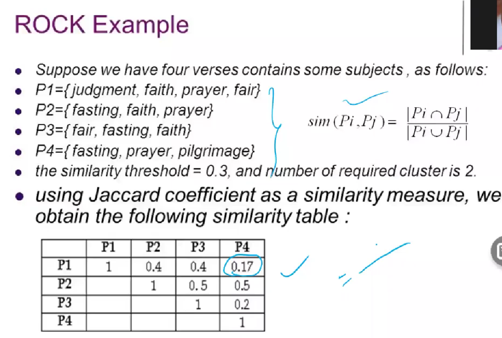
- particularly large data-sets
高斯混合聚类：
E步：计算 由各混合成分生成的后验概率
M步：通过最大化对数似然函数来计算模型参数 （混合系数）、

上一章：讲了几类基本的数据聚类方法：基于代表点的算法、层次聚类算法、基于概率模型的算法、基于密度的算法
数据的类型、规模和维度都会对聚类造成一定影响，所以前三部分会分别讨论类别型数据的聚类、可扩展的聚类、高维数据的聚类。
有监督聚类、集成聚类
对于类别型数据，也可以用这几大类聚类方法来进行，大框架没有变，只是点与簇，或者簇与簇之间相似度或者距离的衡量方式有所改变，这一小节讲的主要是数据类型改变后，这些细节上的变化
框架：先选取每个簇的代表点，再把每个点分到最近的簇。具体的需要考虑…（主要是对k-means的扩展）
首先有所不同的是 质心的选择
图：二维的类别型数据的簇，有两个属性，所以它的质心由这两个属性的直方图组成
相似性：每个属性值在这个簇中的概率值之和
Data1 blue在这个直方图中的概率值和Square在这个直方图中的概率值之和（每个属性值对应直方图频率之和）
下面是两个具体的用于类别型数据聚类的算法
K-modes聚类，把簇中某个属性的众数当作代表点在这个属性上的取值
属性值不平衡，计算相似度时误差大，这种情况下我们应该给罕见的属性值分配更大的权重，可以用总体频率的倒数
ROCK主要针对二元化的类别型数据，典型代表是项集
购物篮数据：二元数据集，每一项都是是否购买某个商品，用01表示，数据集稀疏的，用计算众数的方法计算可能很多簇中的属性都是0
用逆出现频率：在某个簇中，每个属性值出现的频率去除以这个属性值的全局频率 ，标准化后再计算众数
好处：类别型数据取代直方图，方便用相似度函数计算。前面提到用直方图表示质心，主要是想扩展数值型数据中k-means的质心
k-medoids算法，代表点是数据集中的数据
层次算法：前一章介绍的自底向上凝聚的算法框架，只要把数值型数据的距离计算改成类别型数据的相似度计算即可。这里主要介绍的是另一种专门针对类别型数据的聚类算法
之前讲过的项集就是一种二元化类别型数据的代表
鲁棒体现在用一个更加全局的视角来评估两个点的相似性
算法流程：随机采样部分数据是为了更好地适应比较大的数据集
算法框架就是之前讲过的那个自底向上凝聚的过程
直观来看，当两个簇的共享近邻数非常大时，它们应该合并，可以用grouplink来表示它们的共享近邻数；但是越大的簇之间它们的交叉连接理应会越多，会对簇间相似度的衡量造成影响，所以用交叉链接的期望值进行规范化
链接数矩阵（共同邻居数）
基于概率模型的聚类算法
前一章：给定一个混合生成模型，可以用EM算法进行迭代计算数据点属于每一个簇的概率，以及模型的参数。扩展到类别型数据，
数值型数据，常把每个簇的分布假设为高斯分布，簇i生成数据点j的概率密度函数为…，在类别型数据中，概率密度函数要表示成离散的概率分布，这里假设数据的属性之间都是独立的，可以把簇m中的离散概率分布表示为… 是数据点X在第r个属性上的取值，表示簇m中的数据在第r个属性取值为 的概率
M步中求簇的先验分布 没变，原来概率密度函数中的参数 变为求概率分布中的参数值
：所有数据分配到簇m的概率之和是分母，分子是其中第i个属性取值为j的数据分配到簇m的概率之和
可扩展的数据聚类，针对较大规模的数据，这种情况下，内存受限，需要更加高效的算法
k-medoids算法的一个特例是每次要交换k个中心点和剩余的n-k个点，一共交换k(n-k)次，选择目标函数优化最明显的一对交换，对于一个d维的数据集，迭代一次的时间复杂度是 ，对于大的数据集来说很耗时，
CLARA的**主要思想是先进行采样，在小规模的数据上进行PAM算法（f是采样因子），剩下的点分配给最近的簇。**然后重复多次，选效果最好的一次。时间复杂度：当f很小的时候速度快；缺点是如果采样的样本里面有好的中心点，效果就好；如果采不好，效果就不好
CLARANS和CLARA不一样，它是在整个空间内随机搜索，避免了采样带来的问题
maxattempt表示每次局部迭代时最多进行几次替换操作
CLARA只有在数据采样的时候有随机性；CLARANS在每一步搜索的时候都有随机性
CLARANS不会把搜索限制在局部区域，如果发现一个更好的近邻，CLARANS就移到该近邻节点，处理过程从新开始
避免采样数据质量的影响；在整个数据空间随机搜索
BIRCH：扫描所有数据，建立CF树，数据的信息保留在内存中 ，稀疏的簇可当作离群点删除
CF向量记录了一个簇的统计特性，可以用来计算簇的质心、直径等，它的累加性可用在聚类过程中动态地更新新聚类的CF向量，每一维对应相加即可
簇直径阈值T：一个数据点插入到最近的簇中时，若簇直径超过阈值，则叶节点要分裂；
B/L分别是内部节点和叶节点的分支因子，书里把这两个当作一样的，这里把他们区分开来了，代表每个节点里有不超过几个子簇
CF树建立的过程是逐个扫描数据并插入的过程。一个插入并分裂的例子。插入的时候一路更新分支上的CF向量。分裂时可以将节点内质心距离最远的两个CF向量作为分裂的种子，其他的CF向量分配给它们
加快步骤3的速度，同时可去掉异常簇（小的簇）
第三步全局聚类：对叶节点进一步利用一个全局性的聚类算法（比如k-means），改进聚类质量。 由于CF树的叶节点代表的聚类可能不是自然的聚类结果，原因是给定的阈值限制了簇的大小，并且数据的输入顺序也会影响到聚类结果（可能两个相同的数据点因为插入顺序而分配到不同的子簇）。因此，需要对叶节点进一步利用一个全局性的聚类算法，改进聚类质量。（有些是为了分裂而分裂，到了那个阈值不得不分裂）
第四步：聚类细化。根据全局聚类步骤产生的聚类质心重新分配所有的数据点。 也可以再次移除异常点
其实第三步也可以看作是可选的
缺点：假设簇是球形的，对非球形数据的聚类效果不好
CURE算法流程：随机采样和划分的组合，对每个部分都进行层次聚类，直到达到期望的簇的数目/满足某个合并的标准
处理大型数据、离群点和具有非球形大小和非均匀大小的簇的数据
基于划分的聚类算法，需要指定划分簇的数量
选代表点：第一个选离质心最远的，第二个离第一个代表点最远的…
•代表点向中心收缩到原来的α倍：降低离群点的影响
用两个簇之间任意一对代表点的最小距离衡量两个簇的距离（单链接），极端的情况，全收缩到质心，就变成用质心的距离衡量簇之间的距离
优点：采样后速度快
朴素贝叶斯分类
感知机：预测误差 也可以写成
SVM：优化函数基于最大间隔分割原则
爬山法（Hill Climbing，HC）是一种局部择优的贪心搜索算法，其本质上是梯度下降法。
SVM基础思想：间隔最大化 间隔：距离超平面最近的样本点到超平面的距离
优化问题（原问题）
原问题优化目标是最大化硬间隔，等价地写成这个形式。它是凸二次规划问题，当数据量很大时可以优先求解原问题，否则可以求解它的对偶问题
可以使用拉格朗日乘子法得到SVM的对偶问题，用拉格朗日函数对优化变量w，b求导，再带回拉格朗日函数中得到对偶问题，并且最优解需要满足kkt条件。互补松弛条件表示如果拉格朗日乘子 不等于0，则有 …=1，这个样本点在间隔的边界上，称为支持向量
书中说可以对拉格朗日乘子α梯度下降来逼近最优解，一般的话还可以用smo算法来求解
当数据不完全可分时，允许支持向量机在一些样本上出错，引入松弛变量 来放松约束，同样使用拉格朗日乘子法，得到对偶问题，比硬间隔只多了 的约束
内点法
另一种是非线性svm，它要解决的问题是数据在低维空间中不可分的情况，我们可以先将特征映射到高维，又因为在对偶问题和最终解中特征仅以内积形式出现，所以我们不需要显式地知道 ，只需要这两者的点积，也就是内核相似度，k(xi,xj)。因此实际中只需要选择核函数即可，前提是这个核函数满足mercer定理，也就是它的核矩阵S是半正定的，这个函数就可以作为核函数使用。于是可以把问题改写成
常见的核函数有高斯径向基核，多项式核，sigmoid核
另一个线性分类模型是感知机。它包含两层节点，输入节点的数量等于数据的维度，对于二分类问题，这里假设输出标签是-1或1，权重是需要学的。它最终的决策函数和SVM一样，但是优化的目标不同，SVM是要最大化间隔，感知机优化的是近似的最小二乘误差。
每次选取一个训练样本，用梯度下降法更新权重（y-z）x是平方误差对w的近似负梯度。 eta 是学习率，
多层神经网络在此基础上加入多个隐藏层，一个层的节点作为下一层节点的输入
权重的更新包括前向传播和反向传播。前向传播过程计算出的一些中间值可以缓存起来，反向传播就是从最后一层往前逐层更新权重。
可以学习任意形状的决策边界，还可以学习数据在不同区域的不同决策边界，比如隐藏层的几个节点可以分别学习不同区域不同形状的决策边界
前面讲的都是先构造一个分类模型，然后再对一个特定的测试实例分类。在基于实例的学习中，训练被推迟到分类的最后一步，这样的分类器也叫做懒惰的学习器。它基于的一个原则是类似的实例有类似的类标签，一个最简单的例子是KNN
这一节提出了两点改进KNN距离度量的方式，也就是改变距离度量函数中的A，把特征和类别的分布考虑进来。一种是无监督的马氏距离，把矩阵A换成协方差矩阵的逆矩阵，对不同特征进行缩放，来解决不同特征尺度不同的问题，但是它没有考虑数据类别的分布问题。
比如说这样一个例子，x点是一个测试实例，它位于类别A的一侧，应该被分到A类，但是它的周围类别B的数据点比类别A的数据点更多，所以容易分错。
最近邻线性判别分析这种方法，考虑了数据类别的分布。它的主要思想是用矩阵A在判别能力强的方向上压缩近邻点，在判别能力弱的方向上拉伸近邻点，最终达到的效果是在距离函数中给判别能力强的方向设置比较大的权重
最后简单讲了一下分类器的评估问题，给定一个分类模型，要量化它在特定数据集上的准确性。它分成了两个步骤，方法论问题和量化问题。方法论问题针对的是如何划分训练、测试集。这三种是比较常见的划分方法，实际中我们应该分训练集、验证集、测试集，验证集用于选择参数。这几种划分方式既可以用于划分训练集与验证集，也可以用来划分训练集加验证集与测试集
选择了评估的方法后，接下来要度量准确率，分类器的输出有两种，一种是类标签的输出。除了最简单的准确率之外，当类别不均衡的情况下还可以考虑代价敏感准确率。比如对肿瘤的分类，恶行比良性少很多，并且更不希望将恶行的类别误判。n是每个类别的个数，a是每个类别上的准确率。我们可以给更重要的类别更大的误判代价c
另一种是数值型的输出。比如输出的是属于某一个类的概率值。对于二元标签，我们可以设置阈值来区分正例和负例。通过调整阈值，我们可以得到精度-召回率曲线，或者ROC曲线。精度是预测为正类且本身为正类的样本占比，召回率是被预测出来为正的样本占全部正样本的比例。ROC曲线纵轴是真正率，和召回率一样，横轴是假正率，是错误预测为正的负例占所有负例的比例
对于100个样本，四种算法得到的最有可能是正例的排名，完美的预测，1-5号样本
可以看到，ROC曲线是单调的，而P-R曲线不是单调的，相比之下ROC曲线更直观。我们可以把ROC曲线下的面积作为准确率的度量
凸二次规划问题，优化变量是d个，m个约束；当数据很多时，可以直接解原问题；当维度比较高时可以转化为对偶形式再求解
有放回的均匀采样
holdout留出法，每次采一定比例的样本作为训练集，剩下的作为测试集。重复采样多次。它的一个问题是类别分布不均衡，测试集中可能采不到包含稀有的类的数据，解决办法是按照比例独立地对不同类别采样
对偶：优化变量m个，
最终解只与支持向量有关
维度高时/核方法可以解对偶问题，SMO方法
求解更高效，因为只用求解比例系数a，而比例系数a只有支持向量才为非0，其他全为0.
拉格朗日对偶问题的求解：SMO、对 梯度上升法
线性可分支持向量机：当训练数据线性可分，通过硬间隔最大化，学习一个线性的分类器
线性支持向量机：当训练数据近似线性可分，通过软间隔最大化，学习一个线性的分类器
非线性支持向量机：当训练数据线性不可分，通过使用核技巧及软间隔最大化，学习非线性分类器
核函数满足mercer定理
高斯核 通过泰勒展开，可以表示成所有次数的多项式核的线性组合
核 k-means 映射到另外一个特征空间中再进行聚类
KPCA：高维空间线性映射到低维空间 变成非线性映射
感知机：单层神经网络，输入节点通过一个权重和输出节点相连接，这里假设输出是-1或1的类别标签
它学到的函数是这样一个激活函数，学习权重W和偏置b
第t次迭代时权重向量W的更新公式为
是学习率
近似优化预测值的最小二乘误差
罗列
相信大部分人都听过核函数可以将低维数据映射到高维中，其实准确说核函数只是给出了数据在低维下计算高维内积的方法。
内点法：求带约束的线性规划问题（LP）/ 带约束的二次规划问题（QP）
障碍函数法：Barrier Method的思想就是通过在原始的目标函数中添加一个障碍函数（也可以理解成惩罚函数）来代替约束条件中的不等式约束。
高斯径向基函数 σ越小，对数据划分越细致，也越容易倒置过拟合
slater条件确保了鞍点的存在
KKT条件便是确保鞍点便是原函数最优解的充分条件